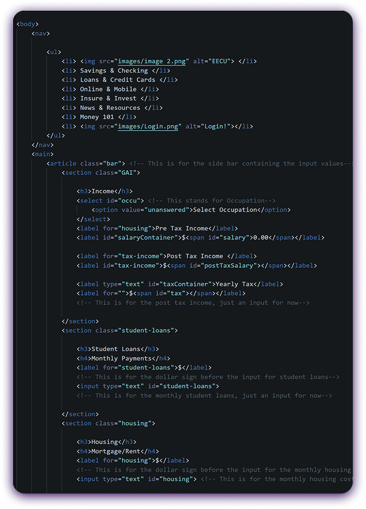

CHALLENGES CONQUERED
- The Problem: I wanted to add commas to separate thousands and 2 decimal places but I couldn’t figure it out.
- The Solution: After researching online, I found that “.toLocaleString” adds commas in the thousands and when I also added minimum and maximumFractionDigits, that also gave me the 2 decimal places I wanted.
- The Problem: When I was doing my media queries the sidebar would go inside of the pie chart.
- The Solution: I found out that there was a positive margin-left on the sidebar that was making it go into the pie chart.
- The Problem: I wanted to add a warning that you weren’t saving enough depending on how much you were earning.
- The Solution: I made an empty <p> tag in the HTML and in the JS I made an if statement. If the amount saved was less than 10% of your post tax monthly income, it’d populate the <p> tag with a message saying that you should probably save more.

TECHNOLOGY STACK
- Languages HTML5, CSS3, and JavaScript
- Tools VS Code, Figma, Github
- The Problem:Netlify
CONCEPTS LEARNED
- DOM ManipulationI deepened my understanding of using JavaScript to change CSS classes and IDs to make changes to the website in real time as the user is seeing it.
- Semantic ArchitectureI moved beyond simple div tags to use semantic HTML like section, article, and nav for better accessibility and SEO.
- Responsive Design I improved my media query skills, implementing multiple breakpoints in my website to keep the mobile, tablet and desktop experience seamless.
- Chart.JS & Fetch APII learned how to make a pie chart using JavaScript while grabbing the data for it using Fetch API
HABITS OF MIND
- Investigation: Before we started to create the website we had to investigate other examples of online budget calculators and write down what ideas we wanted to implement into ours, what we didn't want to implement and what new things we could add to it.
- Communication: Up until about the end of the project, we weren't allowed to do the code ourselves at all. We had to act as a project manager and tell our “devs” what we wanted and how we wanted it.